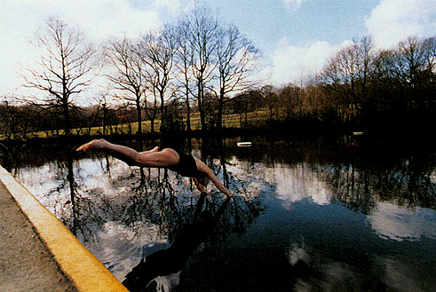

photo: Ruth Corney
'Ruth Corney has been photographing the ponds and the people who use them for the last two years.She has remarkably penetrated a private space without being voyeristic or intrusive.'from Refugees by Orla Barry